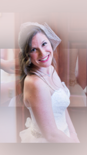
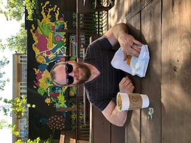
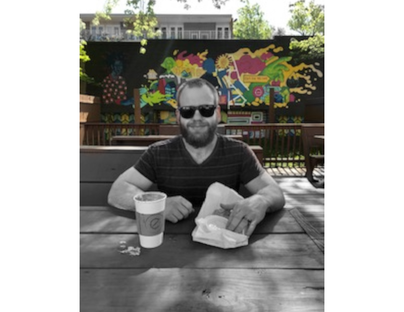

Abby Ruffier
Vingnettes and Fading


Before
After scaling, using the eclipse selector tool around the bride image, adding a focal blur, and creating a layer mask to blend the image of the bride over the image of her dress being zipped up.
Color Selection
Before
After rotating, creating a second layer of the same image, desaturating, adding a layer mask and brushing over top the first layer to reveal the color of the trees and graffiti